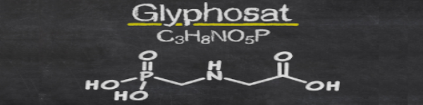

Was ist das eigentlich?
Glyphosat ist eine chemische Verbindung aus der Gruppe der Phosponate. Es ist ein Unkrautbekämpfungsmittel, welches bestimmte Pflanzenarten tötet. Es wird seit 1970 im Haushalt, Industrie, Landwirtschaft etc. verwendet. Es ist überall einsetzbar. Es ist ein farb-/ geruchsloser Feststoff. Glyphosat wird als Säure und Salz hergestellt. Die erste Firma, die das Glyphosat hergestellt hat, hiess Monsanto. Die Firma wurde 1901 gegründet. Glyphosat wurde 2015 von mindestens 91 Chemieunternehmen in 20 Ländern hergestellt. Allein in China gibt es 53 Hersteller, in Indien 9 und in den USA 5.Die produzierte Menge wurde 2008 auf 600'000t Glyphosat geschätzt, 2011 auf 650'000t und 2012 auf 720'000t.
Mehr als 40% des Glyphosats werden also in China hergestellt.
Auf der Welt gibt es 15'000 Produkte die Glyphosat enthalten.
Mögliche negative Auswirkungen:
- Unfruchtbarkeit
- Herzinfarkt
- Depressionen
- Krebs
- Diabetes
- Alzheimer
- Verdauungsprobleme
- Lähmung
Weiter kann es zu Fehlgeburten kommen und der DNA von Mensch und Tier schaden.
Quelle: https://de.wikipedia.org/wiki/Glyphosat/
